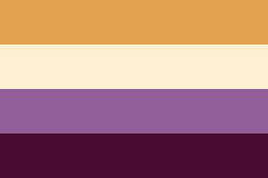

Rowynn Sewkaransing
Ethiek ontwerper in opleiding, die strijd voor een toegankelijke en inclusieve web.
Info
Mijn naam is Rowynn, en ik studeer aan HvA bij de opleiding Frontend Design & Development. Ik heb voor FDND gekozen omdat ik ook webapps wil maken voor anderen. Buiten mijn studie werk ik als student-assistent voor CMD.
Ik woon momenteel in Amsterdam-Zuidoost, een kleurrijke, diverse stadsdeel van Amsterdam waar ik thuis voel.
Skills
Ik heb een basis aan front-end skills. Ik heb nog veel te leren. Mijn leukste werk is StopShittyDesign.
- HTML:
- CSS:
- Javascript:
- ✦✦✦✧✧
- ✦✦✧✧✧
- ✦✧✧✧✧
- Figma:
- Photoshop:
- Illustrator:
- ✦✦✦✧✧
- ✦✦✦✧✧
- ✦✦✧✧✧
Interests

Ik ben veganist, esperantist en queer. Ik hou van nerdy dingen! Ik speel games en lees (sci-)fantasy, en organiseer wekelijks Pathfinder 2e! Mijn favoriete boek is Worm, en verder luister ik naar veel punk/alternatief muziek.
Contact
Ik ben bereikbaar via e-mail, en indien nodig, Telegram.